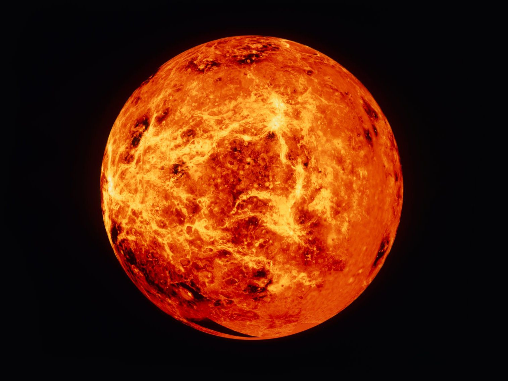

Меркурий

Меркурий - самая маленькая планета в нашей Солнечной системе. Эта планета не имеет атмосферы и подвержена экстремальным температурам от -173°C до 427°C.
Венера
Венера - вторая планета от Солнца и является "сестрой" Земли. Эта планета имеет очень плотную атмосферу, состоящую главным образом из углекислого газа, а также облака серной кислоты.
Земля
Земля - наша родная планета, единственное известное небесное тело, где существует жизнь. Она обладает уникальными условиями, включая существование воды в жидкой форме, атмосферу и подходящую для жизни температуру.
Марс

Марс часто называют "Красной планетой" из-за своего красноватого цвета. Поверхность Марса покрыта пылью и песком, а атмосфера содержит разреженный углекислый газ.
Юпитер
Юпитер - самая большая планета в Солнечной системе, состоящая в основном из газа. У нее очень мощное магнитное поле и множество спутников, включая большие ледяные галактические спутники.
Сатурн
Сатурн известен своими кольцами, состоящими в основном из льда и камней. Эта планета также состоит в основном из газа и обладает множеством спутников, включая самый большой спутник в Солнечной системе - Титан.
Уран
Уран - одна из ледяных гигантских планет в Солнечной системе. Она имеет весьма необычное положение вращения, когда она вращается на боку. У Урана также есть кольца, но они гораздо тоньше и менее заметны, чем у Сатурна.
Нептун
Нептун - самая дальняя планета от Солнца и восьмая по размеру в Солнечной системе. Поверхность этой планеты состоит главным образом из газового состава, а также высоких атмосферных давлений и низких температур.